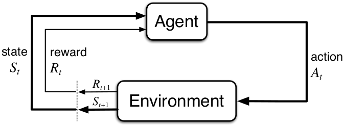
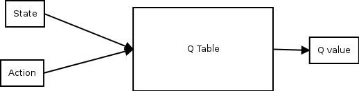
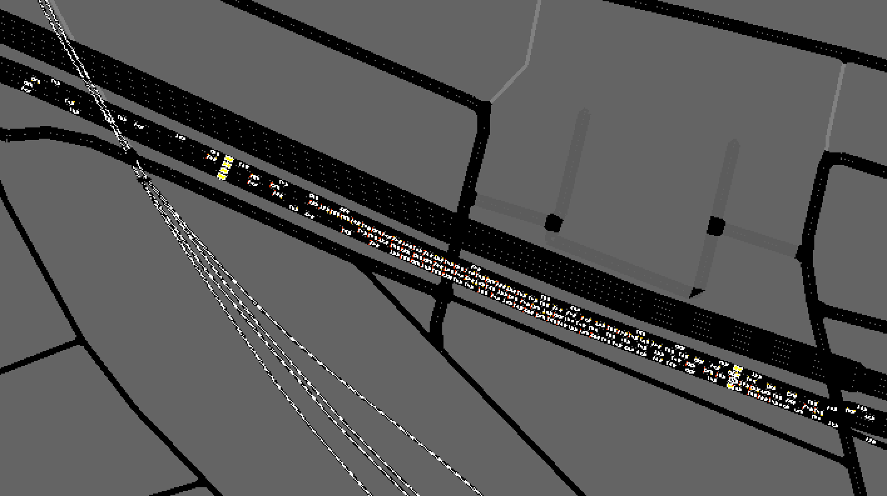

Final presentation
Traffic control using Reinforcement Learning algorithms
Thai-An THAN TRONG
Télécom ParisTech | Actemium Paris Transport
February 19th 2019
Introduction
Cost of traffic jam in France
- €17 billions in 2013 : fuel, premature vehicle wear, working time loss, ...
- €1943 per year per household
- 135 hours of traffic jam per conductor
Actemium Paris Transport
Vinci Energies group
- Specialized in information systems for transportation infrastructures and Smart Cities
- About a 100 employees
- AIXOM : AI projects
Traffic control
Prevent traffic congestion
- DIRIF : Direction Interdépartementale des Routes d'Ile-de-France
- Ile-de-France's highways : rush hours
- Access control : regulate vehicles entrance
Set a traffic light at the merging ramp
Traffic control
No regulation
Traffic control
Existing solution
- Induction loop detectors : throughput and occupation rate data every 20 seconds
- Thresholds and red light to control merge ramp
Traffic control
Current system
Traffic control
Current system
AI for traffic control
- Artificial Intelligence : powerful, robust, many applications
An Introduction to Reinforcement Learning
Learn by trial and error


Robot example
| Up | Down | Left | Right | |
|---|---|---|---|---|
| Cell (0, 0) | ||||
| Cell (0, 1) | ||||
| ... | ||||
| Cell (n, p) |
Store information from experiences:
Given an environment’s state, which action was good ?
Reinforcement learning algorithms
Q-Learning Algorithm
Traffic control and RL
How do we move from a robot game to a large road network with traffic jams ?
State, action, reward
Define concepts in a traffic regulation context
| State | Action | Reward |
|---|---|---|
| Throughput, occupation rate | Red/Green light, phase duration | Number of near standstill vehicles, delay, queue length |
When storing is too complex, use new methods
Experience replay
Store experience tuples
Avoid forgetting previous experiences
Reduce correlations between experiences
Using a traffic simulator : SUMO
How can we have access to SUMO's data ?
- TraCI API
- Retrieves traffic values and modifies directly on simulator
Use TraCI with Python
TraCI example
# --- VALUE RETRIEVAL ---
# Returns a list of ids of all vehicles currently running within the scenario
id_list = traci.vehicle.getIDList()
# Returns the speed of the vehicle with ID veh_id within the last step [m/s]
speed = traci.vehicle.getSpeed(veh_id)
TraCI example
# --- STATE CHANGING ---
# Set traffic light phase
traci.trafficlight.setPhase(tl_id, phase)
# Sets traffic light phase duration of the current phase in seconds
traci.trafficlight.setPhaseDuration(tl_id, duration)
Overall project
Flow Framework
Computational framework for deep RL and control experiments for traffic microsimulation.
Flow Framework
Environment Class
class TrafficLightEnv(Env):
self.__init__():
# ...
self.get_state(self):
# collect current state
return throughput, occupancy
self._apply_rl_actions(self,rl_actions):
# set traffic light
traci.trafficlight.setPhase(...)
self.compute_reward(self):
# reward = ...
return reward
Model creation
Reward
| Rewards | Advantages | Drawbacks |
|---|---|---|
| Penalize near standstill vehicles | Explicit reward, set coefficients | Difficult to adjust |
| Compute delay of each vehicle based on their speed | Global reward, conductor-oriented | Converges slowly |
Results
Upcoming video